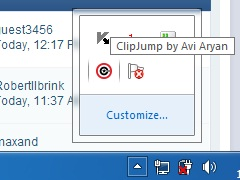
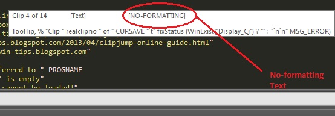

A Magical Clipboard Manager
TABLE
- After Downloading Clipjump, unzip it and run Clipjump.exe .
It's a portable application so no installation is needed.
- When you run the exe, Clipjump's icon will be seen in SystemTray.

- Try copying either by Ctrl+C or by Right Click -> Copy or Shift+PrintScreen
- You will notice a Tip, [Transferred to Clipjump] when you copy something.This will mean that the copy has been succeeded.

- Now, press Ctrl+V(paste action), you will see a tip containing the file or text to be copied.[This is Paste Mode].
If an Image has been copied, a Window showing your image will pop-up.
You will have to release Ctrl to perform actions. (You will know later)
Here, Release Ctrl to paste.
- To move through Multiple Clipboards, press V again while holding Ctrl. [while in Paste Mode]
Release Ctrl to Paste.Tap C while holding Ctrl to move backwards.
- To Cancel Copy, press X while in Paste mode [Ctrl Pressed].
The tip should change to a Cancel Message. This is [Cancel Mode]
Release Ctrl to confirm.

- To Delete Current Clipboard, press X twice in Paste Mode or once in Cancel Mode.
The tip should now change to a Delete Message. This is [Delete Mode]
Release Ctrl to confirm.

To Delete all Clips, press X thrice in Paste Mode OR twice in Cancel Mode OR once in Delete Mode.
The tip should change to a Delete All message.This is [Delete All Mode]

Release Ctrl to confirm.
Notes
- As you can see, Releasing Ctrl is the basis of performing actions in Clipjump.
- Also, note that Cancel Mode,Delete Mode and Delete All Mode are inter-related.
The program cycles through these modes when you press X while holding Ctrl.
So, pressing X while holding Ctrl in Delete All Mode will switch back to Cancel Mode.
The Fixate option is meant to hold a current Clipboard at a fixed position while
positions of all other Clipboards change.
Thus, if a Clipboard is fixed at [Clip 1], it
will stay there at Clip 1 even after numerous Copies and Cuts.
This can be useful if you want a Clipboard entry to be easily accessible every time you
go in Paste Mode using Ctrl+V.
Please note that Clipjump remembers last pasted clip's position. So, if you have just pasted [Clip 5], Clipjump will
start from [Clip 5] the next time you press Ctrl and then V [Paste Mode].
A workaround to go to [Clip 1] quickly can be going into [Cancel Mode] after pressing Ctrl+V and canceling and then again pressing Ctrl+V.
Clipjump will now start from [Clip 1]
Using Fixate
Pressing SPACE while in [Paste Mode] toggles the Fixed status of a Clip.
If you reach the clip of your choice and want to fix it, press SPACE and you
will notice a "[FIXED]" written after (Clip x of y).
This means the Clip is Fixed there. As said above , pressing SPACE again
on the fixed clip will remove the FIX from it and the "[FIXED]" from the tip will disappear.

Note that the DeleteAll option will delete FIXED Clips too.
- Pressing the shortcut Ctrl+Alt+C will copy path(s) of selected files in all file managers including Windows Explorer.

- Pressing the shortcut Ctrl+Alt+X will copy path of current opened folder in all file managers including Windows Explorer.
- Pressing the shortcut Ctrl+Alt+F will copy selected file's content to Clipjump.
- This function works with all file managers including Windows Explorer.
- This module will also work on Image files and exported Clipboard files (.cj).
To force Clipjump Paste Mode to be activated by some other key other than Ctrl+V, you can use the Settings editor of Clipjump.
Simply open the editor and look for the Paste Mode(Ctrl +..) value in the Shortcuts group. Change the default V in the box to some other key to make the Clipjump Paste Mode to be activated by the Ctrl combination of that key. Make the value blank to disable Clipjump Paste Mode.
Many a times you have applications that use Clipboard's common transfer to extract data from various locations.
These apps can be a headache when used with as consistent a tool as Clipjump.
The One Time Stop feature just solves this problem. Available with the configurable shortcut Alt+S, you can call it once to make Clipjump automatically ignore the
last data and linked content that is transferred to System Clipboard and so Clipjump. In this period, what really happens is that the Clipjump Clipboard Monitoring is
deactivated , a feature which can be controlled via Clipjump Controller.
NOTE - When Clipboard Monitoring is disabled (as in One Time Stop) , Clipjump's tray icon will become dark.
WARNING - One Time Stop is deactivated when Paste Mode is accessed in the ignore period.
Selective Windows Clipboard
Many a times there are situations where you are not allowed to paste using the old shortcut Ctrl+V (like in Command Prompt).
There the Selective Windows Clipboard Option comes handy.
Using
Cycle through the clipboards by Ctrl+V or C .When you reach the clip of your choice,
press S while holding Ctrl.
You will see a Confirmation (System Clipboard has Clip x) in form of tip.
That's it.
Now, the Right-Click > Paste Or any other option to Paste other than the old Ctrl + V
will paste the Clip you had choose like it is currently stored in System Clipboard.
No-Formatting Mode
No formatting mode truncates formatting from Clipjump clips when they are pasted.
To access this mode, use the "Z" key as the toggle when in [PASTE MODE]
Press "Z" once while in [PASTE MODE] and you will see a [NO-FORMATTING] in the Tip.
This will mean all the clipboard data pasted from now onwards will have Formatting truncated.
To disable this mode, press "Z" again while in [PASTE MODE] and the [NO-FORMATTING] text will dissappear.
Note that that the No-Formatting setting doesn't mean that clips copied will not have any formatting, this means that the formatting will be
removed from them temporarily when they are pasted.

TIP - To make Clipjump start by default in NO-FORMATTING mode , change the Start_with_formatting value in the [ADVANCED] section of Settings.ini to 0.
Export and share Clipboards
Clipjump supports exporting clipboards as files which can be stored as a record OR send to a friend.
The feature is accessible by tapping E in [PASTE MODE] and by the shortcut Ctrl+E in the Clipjump History Tool.
The Clip or Clipboard when exported will be saved in "My Documents" with a name export[x].cj where x is a variable.
The .cj file extension when used with Copy File Data directs Clipjump to load the file contents into itself.
Miscellaneous
Showing the Pasting tooltip - You can make Clipjump show a Pasting.. tip when you paste some data. To do so, change the value of Show_pasting_tip in the [Advanced] section of Settings.ini to 1.
Setting shortcut to copy to system Clipboard (bypassing Clipjump) - You can also create a unique shortcut in Clipjump to copy/cut data only to System Clipboard
and not Clipjump. To create these shortcuts, open the [Advanced] section of Settings.ini and write down shortcut values for windows_copy_shortcut and
windows_cut_shortcut. As you may have guessed, these shortcuts are disabled by default and by writing shortcut values for them in the ini you create them.
These shortcuts can be very useful when in need to copy sensitive or crap information of the Clipboard.
Ctrl Held/Pressed
V - Activate PASTE-MODE and move forward through Multiple Clipboards (from 1 to 2 , 2 to 3)
C - Move backwards through Multiple Clipboards (from 3 to 2 , 2 to 1)
S - Add current Clip to Windows Clipboard [Selective Windows Clipboard Option]
X - Toggle between, Cancel,Delete,Delete All MODE
E - Export current clip
Space - Fix/un-fix a clipboard at its position.
Z - Toggle Formatting for Clips
General
Win+C - Open Clipjump Clipboard History Tool
Ctrl+Shift+C - Open Clipjump Channel Selector
Ctrl+Alt+X - Copy opened Folder Path
Ctrl+Alt+C - Copy File Path
Ctrl+Alt+F - Copy file content
Alt+S - One Time Stop
{kind=link}
{kind=link}